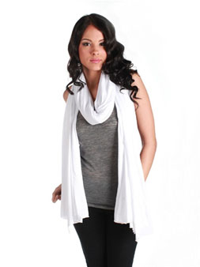

|
Winter CasualWinter is freezing us with every passing moment. The chills and cold breeze are so penetrating that one needs to keep oneself completely warm and soothing with cozy cloths, mufflers, long boots and winter hats. It is the season of fog & snow which have to be hindered by appropriate clothing line that can not only keep you warm but also makes you trendy & stylish as well. One of the greatest outfits for the season is a boyfriend cardigan. These cardigans come in many colors and for many body types come in a shrunken boyfriend silhouette. A great way to make the cardigan into an outfit is with the cigarette-leg jeans. These jeans are sleek, curve-hugging, and graze the knee and angle. They are the perfect inbetween of a skinny jean and jegging. And the final touch to this outfit would be a big chunky scarves. These scarves are great for the season and because they are so big, can even be worn with just a T-shirt as well. |
|||||